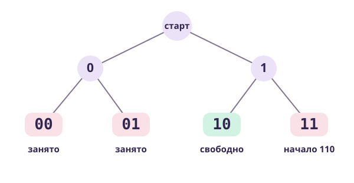

Как найти свободный код
Ни одно слово не является началом другого.
10 и 101 конфликтуют. 10 и 110 не конфликтуют. Ведущий ноль — часть кода.
Каждый шаг добавляет один бит. Если вершина занята словом, продолжать вниз нельзя.

А: даны 00, 01, 110. Найдите кратчайший код, при равной длине — наименьший.
Б: даны 00, 10, 010. Найдите код по тому же правилу.
А: даны 0, 100, 101. Найдите кратчайший код, при равной длине — наименьший.
Б: даны 1, 010, 011, 000. Найдите код по тому же правилу.
Даны 0, 100, 101, 110. Ветка 111 — последняя свободная.
Если неизвестны два кода, нельзя занять 111 целиком. Разделите ветку на 1110 и 1111.
А: даны 0, 100, 101, 110. Выберите кратчайший, затем наименьший код, оставив место другой букве.
Б: даны 1, 000, 001, 010. Сделайте то же самое.
При кодах А — 0, Б — 10, В — 11 разбиваем 10110 слева направо: 10 | 11 | 0.
Записываем БВА. Если дошли до конца кодового слова, дальше читаем новую букву.
Кандидат не начинается с готового кода. И готовый код не начинается с кандидата.
Сначала сравни длины, потом сравни числовые значения. Если букв несколько, проверь оставшиеся ветви.
Выполни Д1–Д6 из «Домашки» и поясни выбор кода в Д1–Д4.
Домашнюю самопроверку открывай из назначенного задания.